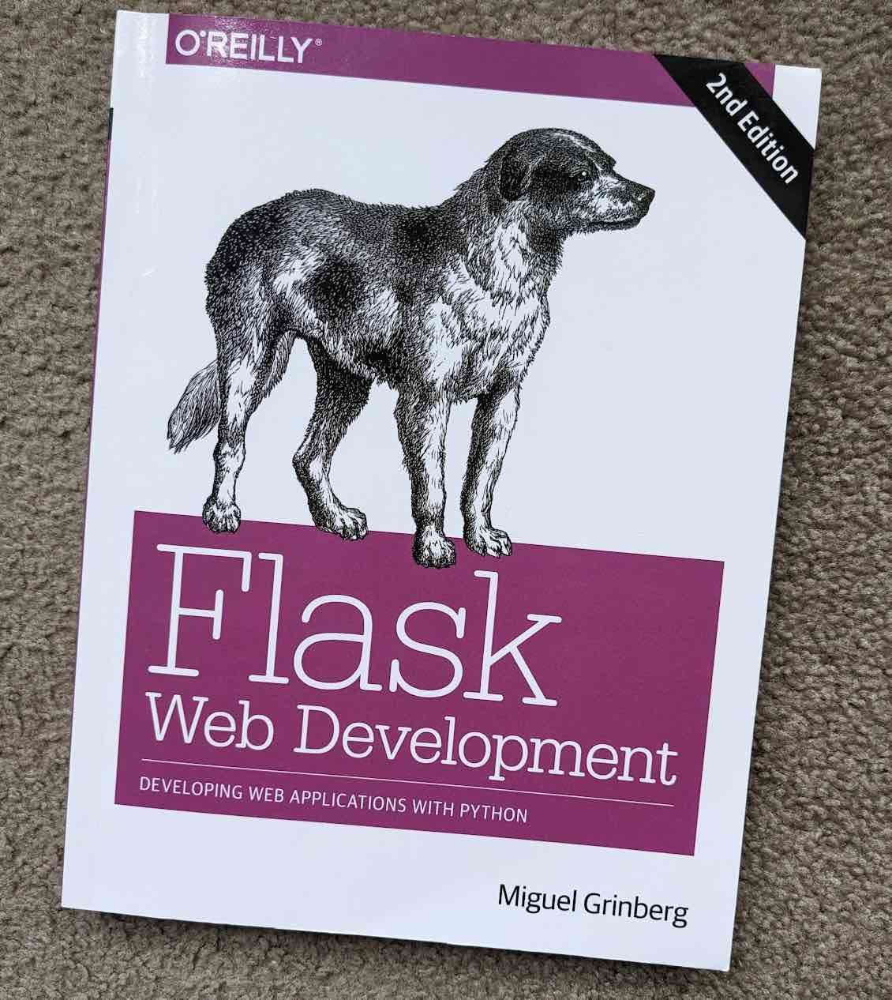

Table of Contents
1. Flask Web Development
O'Reillyの Flask Web Development 2nd edition by Miguel Grinbergを読みました。 この本はDjangoと並んでメジャーなPythonのWebアプリケーションフレームワークであるFlaskの実践的な入門書です。

300ページ弱と、Flask及び周辺技術を解説した本としては短めですが、補足のgithub レポジトリ が用意されています。 ソースコードは全てのバージョンがこのレポジトリにありますが、手を動かして全て「写経」するのがオススメです。
2. 内容
Webアプリ入門としてよくあるパターンでブログサイトを作ります。ネット上に見られるチュートリアルよりもだいぶ踏み込んでいて、きちんとセキュリティーまで考えられたユーザー管理などはそのまま自分のプロジェクトに応用(コピペとも言う)できます。ありがたいことに、ソースコードの一部を使いまわしても良いようです。
前半は一つのpythonファイルで機能を追加して大きくしていきますが、中盤以降はある程度の規模での開発を想定したディレクトリやファイル配置をしていきます。この分け方がとても参考になりました。Blueprintを使ったネームスペースの使い分けが詳しく説明されています。個人の趣味での開発ではサボりがちなテスト関係も、どういう目的に何のテストが有効なのかも含めて解説されています。(結局、趣味の開発ではまたサボってしまうわけですが)
最後にはクラウドやコンテナ、物理サーバーを使ったデプロイにも(さらっとですが)触れられていて、単なる入門書の枠を超えた、とても実践的で使える本になっていると思います。
難点は、古くなってきている部分があることと、ソースコードの説明が不十分だったり間違いがあったりすることです。本書で使っているflask-bootstrapよりも、Bootstrap 5に対応したbootstrap-flaskを使ったほうが良いと思います。ソースコードが不十分な点は、githubの補足レポジトリ(間違いが修正され、アップデートされている)を利用することで何とかなるレベルです。
3. レベルと前提知識
この本のレベルは中級者以上で、入門書を終えたあとの2冊目として使うには難しすぎると思います。 Pythonではデコレーターやクラスは知っているものとして話が進みます。写経しそこねてエラーが出たときにPythonのスタックトレースが読めないとお手上げです。 HTMLの知識も多少必要です。JavaScriptの知識はあまり必要ありません。 データベースは入門書を終えてjoinが曲りなりに理解出来るくらいでないとついていけないでしょう。別途、軽くSQLAlchemyには入門しておいたほうがよいように思います。 補足のgithubレポジトリを使うために、gitが使えたほうがいいと思います。githubのUIでコードを読むだけでも何とかなりますが。。。
4. 最後に
ネット上で非常に評判の良い本書ですが、噂に違わない良書でした。これ1冊読むことで、チュートリアルレベルを完全に超えたWebアプリケーションが作れるようになります。私も早速、FlaskとSQLAlchemy/sqlite3, beautifulsoup, paramikoを組み合わせた職場ラボのサーバー管理Webアプリを作ってみました。